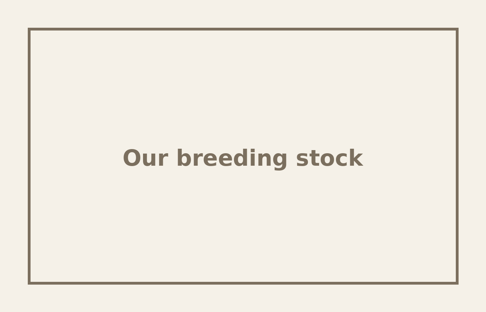
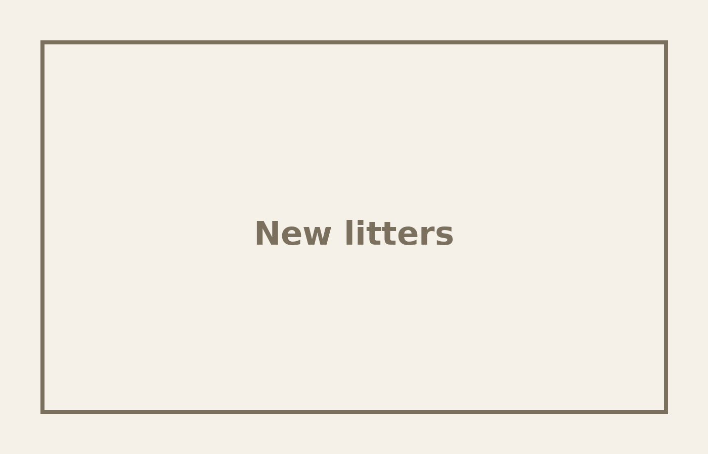
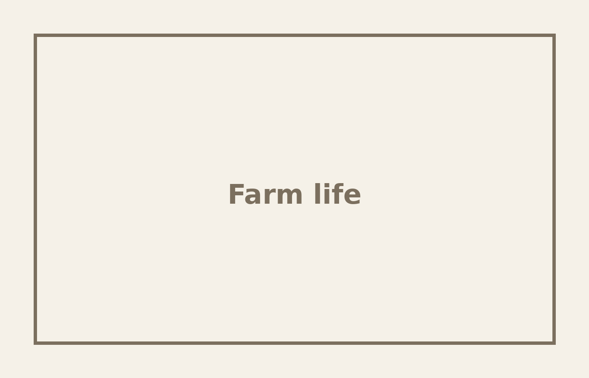

Our breeding stock
Strong, healthy adults providing the foundation for every litter.
Preview Rural Goods Kunekune piglets, breeding stock, and daily farm life.

Strong, healthy adults providing the foundation for every litter.

Playful piglets with plenty of room to explore and socialize.

Pasture, paddocks, and the caring environment our animals call home.